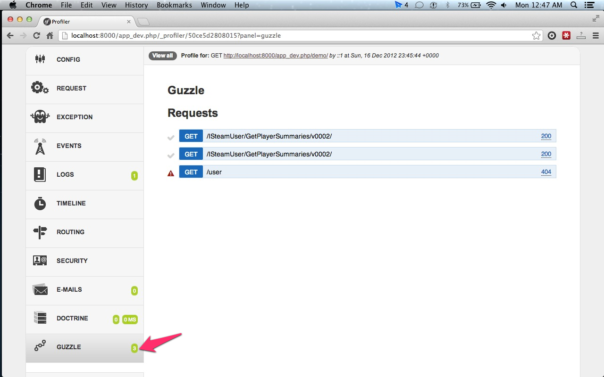
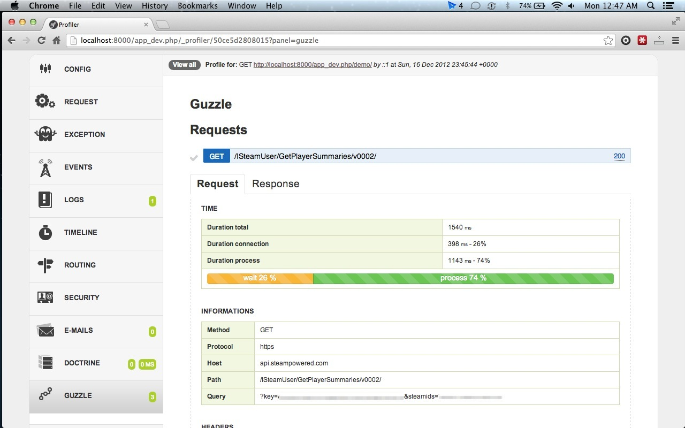
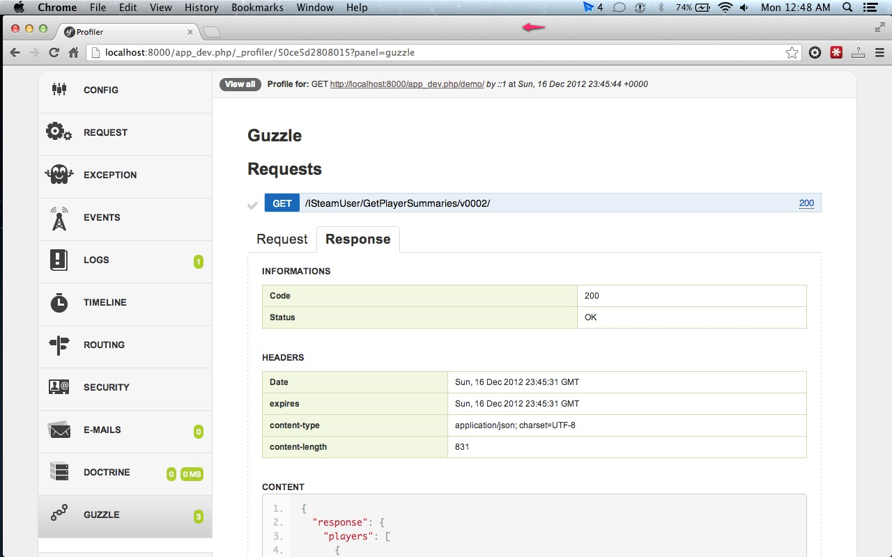

Playbloom Guzzle Bundle
Provide a basic logger and an advanced profiler for Guzzle
- The basic logger use the default Symfony app logger, it's safe to use in your production environement.
- The advanced profiler is for debug purposes and will display a dedicated report available in the toolbar and Symfony Web Profiler

Installation
Add the composer requirements (will be soon on packagist)
{
"require-dev": {
"playbloom/guzzle-bundle": "dev-master"
},
"repositories": [
{
"type": "git",
"url": "git://github.com/ludofleury/GuzzleBundle.git"
}
]
}
Add the bundle to your Symfony app kernel
<?php
// in %your_project%/app/AppKernel.php
$bundles[] = new Playbloom\Bundle\GuzzleBundle\PlaybloomGuzzleBundle();
?>
To enable the advanced profiler & the toolbar/web profiler panel, add this line to your app/config/config_dev.yml
playbloom_guzzle:
web_profiler: true
Guzzle client as a Symfony service
Concrete Guzzle client creation can be easily managed by the Symfony service container thanks to a simple factory configuration, in this case, you just need to tag your guzzle service(s) with playbloom_guzzle.client.
It will add the basic logger to your client(s). If the web_profiler is enabled in the current environement, it will also add the advanced profiler and display report on the Symfony toolbar/web profiler.
<service id="acme.client"
class="%acme.client.class%"
factory-class="%acme.client.class%"
factory-method="factory">
<!-- your arguments -->
<tag name="playbloom_guzzle.client" />
</service>
Add the logger/profiler manually to a Guzzle client
If you need to handle the registration of the logger or profiler plugin manually, you can retrieve theses services from the Symfony container.
<?php
$client = new \Guzzle\Http\Client('https://my.api.com');
// basic logger service plugged & configured with the default Symfony app logger
$loggerPlugin = $container->get('playbloom_guzzle.client.plugin.logger');
$client->addSubscriber($loggerPlugin);
// advanced profiler for developement and debug, requires web_profiler to be enabled
$profilerPlugin = $container->get('playbloom_guzzle.client.plugin.profiler');
$client->addSubscriber($profilerPlugin);
?>
Customize your own profiler panel
If you need a custom profiler panel you can extend/reuse easily the data collector and profiler template from this bundle.
For example, you have a GithubBundle which interact with the Github API. You also have a Github profiler panel to debug your developement and you want to have the API requests profiled in this panel.
It's quite easy:
First, define your own GithubDataCollector extending the Playbloom\Bundle\GuzzleBundle\DataCollector\GuzzleDataCollector
Then extends the guzzle web profiler template
{% extends 'PlaybloomGuzzleBundle:Collector:guzzle.html.twig' %}
{% block panel %}
<div class="github">
<h2>Github</h2>
<ul>
<li><strong>Github API key:</strong> {{ collector.getApiKey }}</li>
<!-- Some custom information -->
</ul>
</div>
{% include 'PlaybloomGuzzleBundle:Profiler:requests.html.twig' with {'requests': collector.requests } %}
{% endblock %}
And finally declare your data collector
<service id="data_collector.github" class="Acme\GithubBundle\DataCollector\GithubDataCollector">
<argument type="service" id="playbloom_guzzle.client.plugin.profiler"/>
<tag name="data_collector"
template="AcmeGithubBundle:Collector:github"
id="github"/>
</service>
That's it, now your profiler panel display your custom informations and the Guzzle API requests.
TODO
- Add extra information about the client configuration itself (thanks to the guzzle service builder?)
- Add clients|host|endpoint|time filters for http requests
Licence
This bundle is under the MIT license. See the complete license in the bundle:
Resources/meta/LICENSE
Credits
- Swagger for the UI